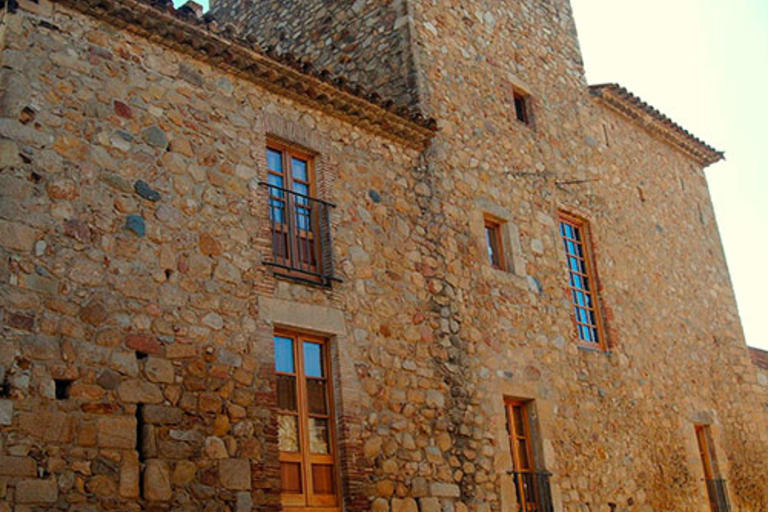

Visita · Platja d'Aro
El castell de Benedormiens, origen del poble de Castell d'Aro durant l'edat mitjana, apareix documentat per primera vegada l'any 1041, quan les autoritats religioses, els nobles i cavallers del…